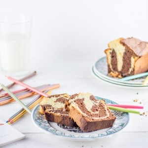

Gâteau marbré façon savane

Aujourd’hui on se retrouve avec la recette d’un gâteau marbré mais pas n’importe lequel puisque j’ai tenté de refaire le fameux gâteau savane que l’on connait tous et dont je raffole depuis que je suis toute petite.Avec cette nouvelle recette je participe à la battle food, organisée par Chapeau melon et qui a décidé de nous ramener en enfance à l’époque des cartables, cahiers de texte et compagnie puisque le thème de cette battle food#32 n’est autre que « douceurs d’enfance ».
Pour cette battle j’ai du avoir au moins un milliard d’idées dues à un milliard de souvenirs de goûters, petits déjeuners et desserts que j’affectionne tout particulièrement. Après avoir réfléchi longtemps à ce que j’allais bien pouvoir faire, le gâteau marbré était une évidence. En effet, le fameux gâteau savane (que vous connaissez j’en suis sûre!!!) est « le » gâteau que j’adore depuis que je suis enfant. Quand j’étais petite, ma mère en acheter souvent et depuis, très souvent au goûter ou encore au petit déjeuner je n’en fait qu’une bouchée (oui oui je parle bien du gâteau entier…). Je ne sais pas expliquer pourquoi mais j’adore ça. Je ne sais pas si vous avez les mêmes symptômes que moi, mais vraiment quand je commence à me couper une part je n’arrive plus à m’arrêter. Enfaite il s’agit d’un simple gâteau marbré mais je pense que lorsque l’on est enfant on aime les choses simples, tant que c’est bon il n’y a que ça qui compte! Des recettes de marbré j’en ai des tas car j’en fais souvent. C’est simple, rapide et tout le monde adore, mais je voulais me rapprocher du gâteau savane le plus possible alors j’ai suivi la recette de Samar et je suis ravie de l’avoir choisie!
Avant de vous laisser avec la recette je vous laisse avec ces quelques mots d’Antoine de St Exupéry :
“Toutes les grandes personnes ont d’abord été des enfants, mais peu d’entre elles s’en souviennent.”
Alors merci à Chapeau melon qui, le temps d’une recette, nous as permis de retourner dans nos souvenirs d’enfance les plus gourmands. Je vous laisse maintenant avec la recette du gâteau marbré façon savane en espérant que cette recette vous plaira!!
Ingrédients
- Oeufs - 4
- Sucre semoule - 150g
- Beurre - 125g
- Lait - 2 càs
- Farine - 150g
- Levure chimique - 1càs
- Extrait de vanille - 1 càc
- Chocolat noir - 100g
- Sel - 1 pincée
Instructions
- Préchauffer le four à 180°
- Séparer les blancs des jaunes dans deux saladiers
- Faire fondre le beurre
- Fouetter les jaunes avec le sucre jusqu'à ce que le mélange blanchisse
- Verser le lait puis le beurre fondu
- Mélanger
- Ajouter la farine et la levure
- Mélanger
- Peser la préparation (pour moi 480g)
- Séparer la préparation dans deux bols différents de manière égale (pour moi 240g/240g)
- Faire fondre le chocolat au bain marie ou au micro onde Si vous utilisez le micro onde, faire fondre le chocolat par paliers de 20sec en remuant entre pour obtenir un chocolat bien lisse
- Dans le premier bol ajouter l'extrait de vanille
- Dans le deuxième bols ajouter le chocolat fondu
- Monter les blancs en neige avec une pincée de sel
- Pesez-les
- Repartissez de manière égale les blancs en neige dans les deux bols
- Mélanger délicatement jusqu'à obtenir des mélanges homogènes
- Beurrer un moule à cake
- Verser dans le fond du moule la moitié de la pâte au chocolat puis la moitié de la pâte à la vanille
- Renouveler la même opération une deuxième fois jusqu'à l'épuisement des pâtes
- Enfourner pendant 40 minutes (vérifier toujours la cuisson vers la fin car selon les fours le temps de cuisson peut varier) La lame d'un couteau doit être sèche en fin de cuisson
Les tips de la communauté
Grand succès nostalgie. Recette simple mais très efficace rappelant les gâteaux d'enfance. Testée et approuvée plusieurs fois avec succès. C'est la simplicité et la gourmandise qui séduisent.
Astuces
- Savane traditionnel - idéal tremper dans le lait
- Recette simple et rapide - parfait pour un bébé à la maison
- Les marbrures esthétiques sont faciles à obtenir
- Se congèle bien pour consommation ultérieure
- Possible de remplacer le lait par un lait de riz maison
Variantes suggérées
- Remplacer le lait par du lait de riz ou autre lait végan
- Remplacer la levure par du bicarbonate de sodium
- Utiliser du lait de soja vanille à la place du lait classique
Ajustements signalés
- Si le gâteau ne gonfle pas et reste plat - vérifier l'ajout de levure